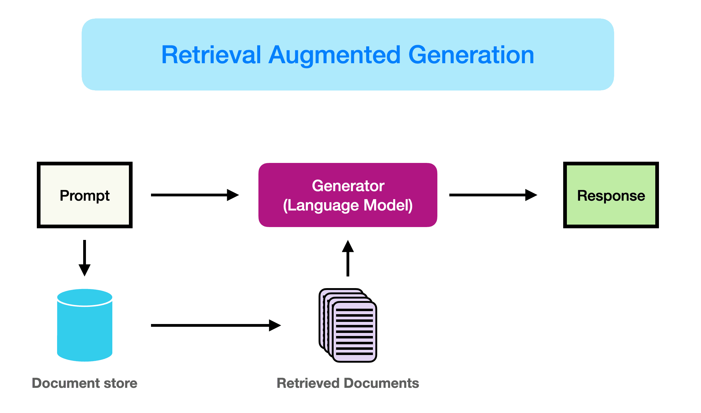
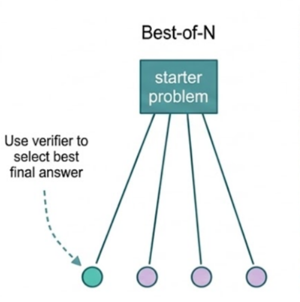
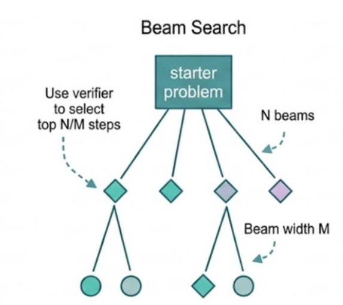
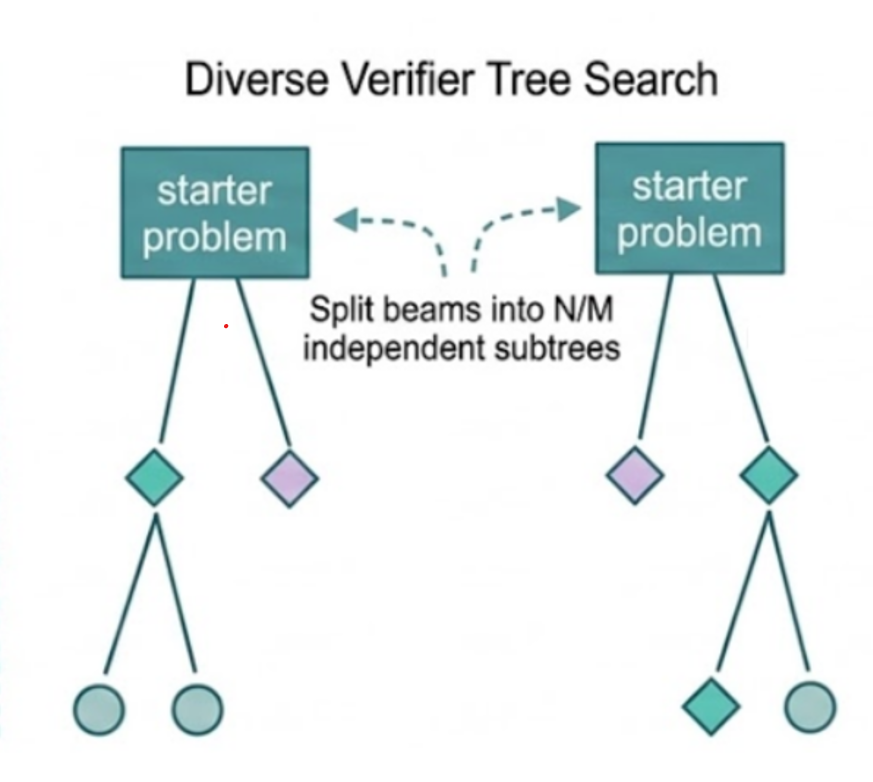
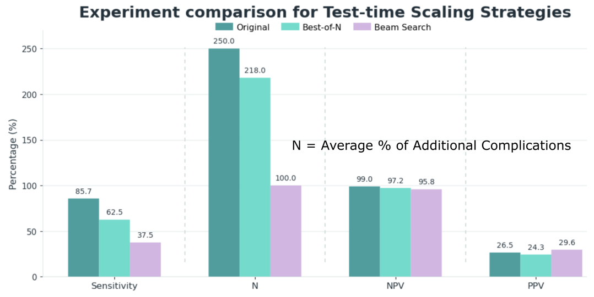
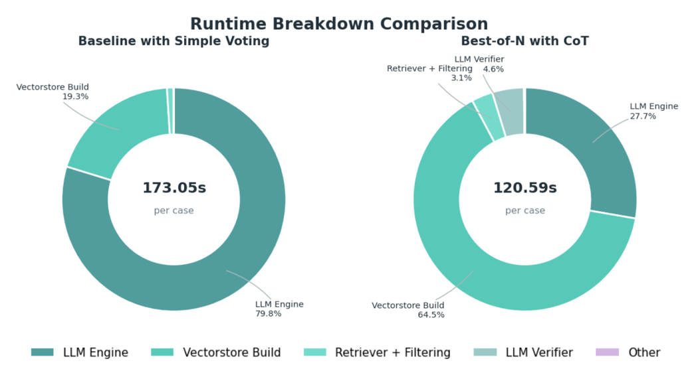
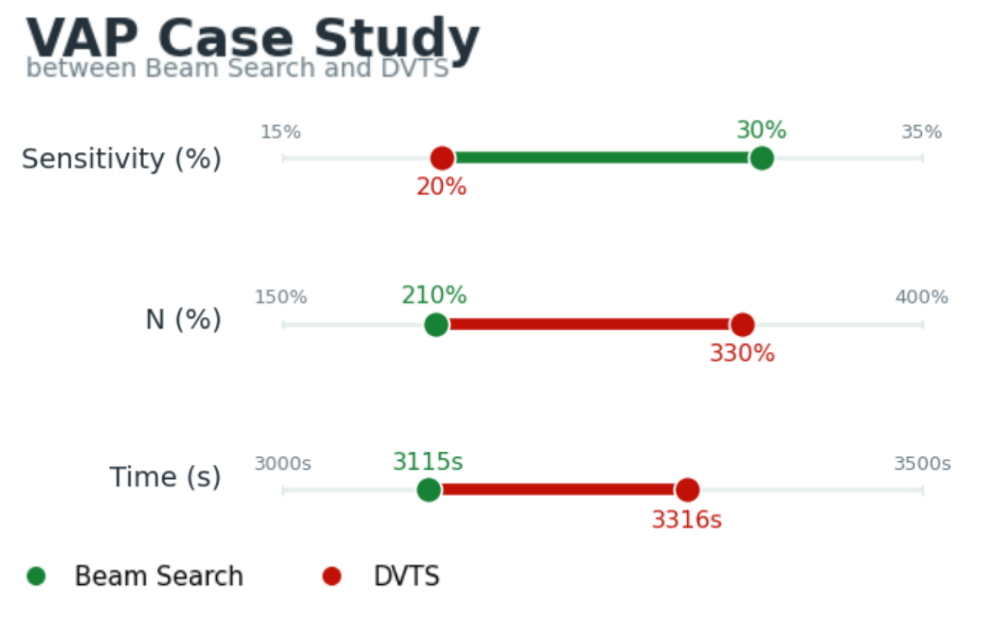

1. Introduction
1.1 Motivation
- Maintaining trauma care quality standards is costly but important. Trauma centers must review patient charts and report complications defined by the National Trauma Data Standard (NTDS), a process that is labor-intensive and often requires multiple trained trauma registrars.
- In this project, we study whether Large Language Models (LLMs) can identify 18 NTDS complications from long trauma notes to support trauma registrars and hospital quality staff.
- Our goal is not to replace expert chart abstractors, but to explore whether LLMs can reduce review burden and improve reporting efficiency by serving as a decision-support tool.
1.2 At A Glance
- We evaluated whether LLMs could label 18 trauma complications from long clinical notes from UC San Diego Health, with the intended use case of assisting trauma registry review rather than autonomous deployment.
- Because these notes are lengthy, we first filtered potentially relevant text with regular-expression based matching and then used Retrieval Augmented Generation (RAG) to retrieve the most relevant evidence chunks for each complication.
- We compared several test-time inference strategies under the same retrieval and data conditions, including majority voting, Best-of-N with Chain of Thought and a verifier, Beam Search, and Diverse Verifier Tree Search (DVTS).
- Our main finding is that Best-of-N provided the most balanced trade-off: it reduced false positives compared with the baseline, while Beam Search was cleaner but too conservative and caused a much larger drop in sensitivity.
- Overall, the current pipeline is better interpreted as a decision-support prototype than a registrar replacement system, and future work should focus on preserving sensitivity while improving precision.
Methods

We used trauma registry-linked clinical notes from UC San Diego Health spanning a 22-month period from 2023 to 2024. Because the notes were often long and highly redundant, we built a retrieval pipeline that first filtered text with complication-specific regular expressions, then split notes into chunks, embedded them, and retrieved the most relevant evidence with RAG. We used this retrieved evidence to prompt the LLM for per-complication decisions. The pipeline architecture and experimental comparison framework were implemented by our team, while some design ideas were adapted from prior baseline work on the same notes. To make the comparison fair, all inference strategies were evaluated under the same underlying retrieval and data conditions.
chunks. Then, we extracted chunks with potentially relevant terms related to the condition with regular expressions to directly match potentially relevant phrases. Afterwards, Retrieval Augmented Generation (RAG) was performed, which used our Amazon Bedrock model to get a vector representation of each word. This allowed us to filter further and account for context. These steps were performed for all notes and all patients. This pipeline was largely built by us, but we reused some aspects and the general structure of a previous baseline which had already been performed on these same notes. We performed prompt engineering in addition to this.
We ran llama's 3.1 8B Instruct Model on Amazon Bedrock both to perform inference and to be used as the verifier model. To score our LLMs we compared our predictions to predictions made by real registrars. We assessed sensitivity, negative predictive value (NPV), positive predictive value (PPV), and frequency of complications identified by the LLM but not the registrar.
After getting baseline results with majority voting and finding room for improvement, we looked to improve this with new methods. To do so, we tested out and compared several test-time inference strategies in identical comparisons:
- Majority Voting where we had 5 queries to the LLM and used it to explain its logic and vote "yes" or "no".
- Best of N with Chain of Thought Reasoning and a verifier model (pictured below).
- Beam Search (pictured below)
- Diverse Verifier Tree Search (pictued below)

Retrieval Augmented Generation allows us to find the medical notes most relevant to each condition.

Generate multiple full solutions, verify the best one.

Keep top reasoning paths at each search step.

Search diverse subtrees to avoid early path collapse.
Results

-
• Stricter test-time search consistently reduced extra
complications, with Beam Search achieving the cleanest
output.
-
• This gain came with a clear recall tradeoff, as
sensitivity dropped from Original to Best-of-N and
further to Beam Search.
-
• Best-of-N provided the most balanced middle point,
improving cleanliness over Original without becoming as
conservative as Beam Search.

• Best-of-N with CoT is faster per case because runtime shifts away from repeated LLM generation, although vectorstore building becomes the dominant cost.

• On the VAP-enriched subset, the main limitation was recall rather than precision, and beam search preserved the VAP-related path better than DVTS, which spent more search budget on non-VAP complications.
- Across all 18 complications, the baseline achieved the highest sensitivity but produced many additional complication labels, indicating substantial false-positive burden.
- Best-of-N improved this trade-off by reducing false positives and improving negative-side cleanliness without becoming as conservative as Beam Search.
- Beam Search achieved the strongest filtering effect, but this came with a much larger drop in sensitivity, meaning it missed more true complications.
- In this setting, sensitivity is especially important because the system is intended to support screening and review; however, PPV also matters because excessive false positives increase manual burden and reduce trust in the tool.
- Overall, Best-of-N was the most balanced configuration among the tested methods, while DVTS behaved similarly to Beam Search because many complication decision trees were too simple to benefit from subtree diversity.
These comparisons were obtained under matched retrieval and data conditions. The main takeaway is not that stricter search is always better, but that there is a practical trade-off between preserving true complication recall and reducing unnecessary positive triggers. This is why we interpret Best-of-N as the strongest overall operating point in the current system rather than Beam Search.
Conclusion
We successfully reduced false positives in our stronger configurations, but this came at the cost of lower sensitivity. Because sensitivity is critical in trauma quality review, the main challenge is to find a better operating point between a more lenient screening baseline and stricter tree-based search. Our results suggest that this pipeline is more appropriate as a decision-support tool for trained staff than as a replacement for trauma registrars. Future work should focus on improving this trade-off through better decision structures, more targeted prompt design, and stronger retrieval and chunking strategies.